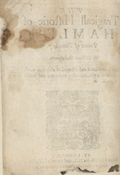

A on a half sheet
The title page of Q2 Hamlet might have been printed last of all, as was common practice at the time. In all of the three early quarto editions of Hamlet, the title page was printed separately from the first pages of text. Remember the first gathering of text was labeled B. That makes the title page part of gathering A by default, even if that letter is not printed at the bottom of the page.
We do not know for sure when the title page was printed or how it was printed. We can consider various possibilities, even as we recognize there is no conclusive evidence supporting any one of the possibilities. Perhaps the printers used another half sheet, as demonstrated here. Even at a half sheet, that left a lot of blank pages, though.

Blank
[A]1r
[A]1v
Blank
The extra blank pages could have served as a protective cover for the pamphlet. If the Folger’s copy of Q2 Hamlet was printed with a blank first leaf, however, that leaf does not survive.